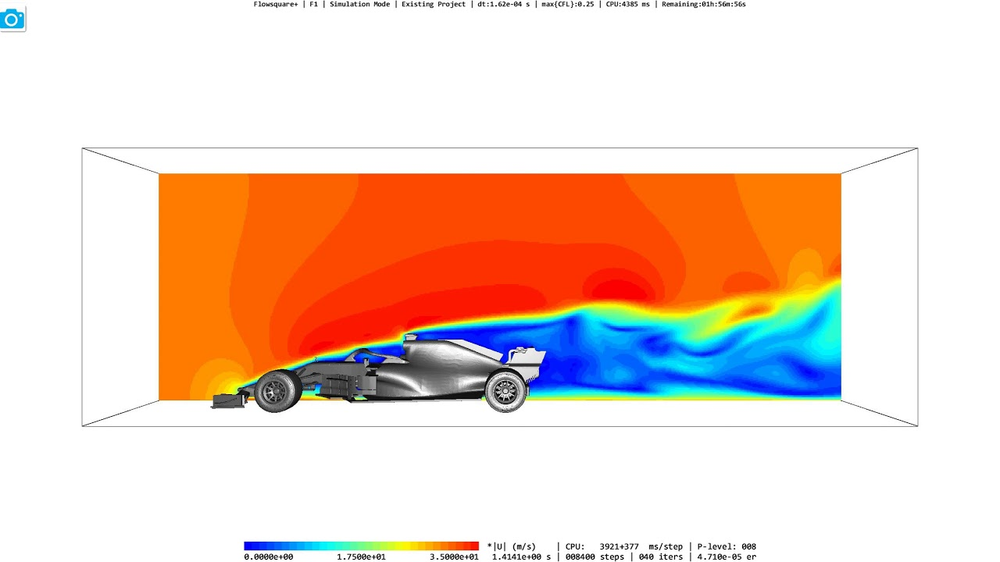

Overview
The Wind Tunnel Heat Map Simulator will utilize a 3D environment with simulated air particle collisions to generate a heat map over the surface of different objects.
We will use the Navier-Stokes equations to model the air flow through the tunnel. Objects inside the tunnel and the wind-tunnel walls themselves will act as obstacles for the flow.
Problem Description
- We are trying to simulate the operations of a wind tunnel and developing different techniques to visualize the air flow within the tunnel as it interacts with obstacle objects.
- A potential challenge will be generating different heatmaps to represent not only wind velocity but also air pressure, drag and lift on different regions of the objects. We will have to capture additional data on the behavior of the particles based on the navier-stokes.
- To solve this problem we will have to create new particle classes to contain these meta data and perform navier-stokes operations on.
- We will need to achieve real time simulation of the wind particles going at high speeds and interacting with the target object.
- To solve this we will approximate as close as possible to accurate real time simulation using the Reynolds-averaged Navier–Stokes
Goals and Deliverables
- What we plan to deliver
-
Demo: Videos of 3 Object Models:
-
Particles colored based on concentration of collisions and movement.
-
Example image:

-
Performance Measurement:
-
Graph of the number of particles that can be rendered vs frame rate
-
Questions to Answer:
-
Does the simulation accurately reflect air flow simulations as compared to widely used simulation models?
-
How close to real-time physically accurate simulation we can achieve in terms of particle behavior and interaction with target objects.
- What we plan to deliver
- Variable Particle Speed (Interactive Scroll Toggle)
- A scrollbar which can change the speed of the wind particles while the simulation runs
- Render the wind particles as different funny objects
- Render wind as fluid water
- Change the simulator so that the object can move during the simulation.
Schedule
| Week |
Task |
| Week of Apr 1 |
Set up object render and wind tunnel environment |
| Week of Apr 8 |
Implement actual wind particles without collisions (Navier-Stokes equations) |
| Week of Apr 15 |
Implement wind particle collisions with object and force changes in vector of said particles |
| Week of Apr 22 |
Implement color rendering of wind particles based on velocity and collisions. Record Demo video and finish deliverables |
We will work on additional goals in spare time
Resources
Software: We will be using the simple GUI and CGL interface from project 4 (clothsim) as our baseline starting point.
Hardware: Personal computers
Online Resources
Navier-Stokes Simulation:
Fluid Flow Visualization: